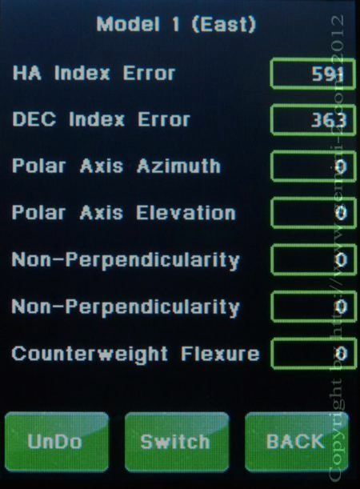

| Interactive Hand-Controller Menus - click on green button to Navigate |
|  |
Notice that you only have only one or 2 entries for the Error Index. Only the HA Index Error and Dec Index Error is calculated on the first star. On the second star which this is, Polar Axis Azimuth and Polar Axis Elevation should have been calculated. Since I made no centering adjustments, the errors stayed the same for this Demo. You use the BACK button to take you to the next Star selection screen. The Switch button will switch the Error screens between the East and West model Error screens. The UNDO button will remove the Last star added to the model. Please hit Back for this Demo to go to the next alignment star. |